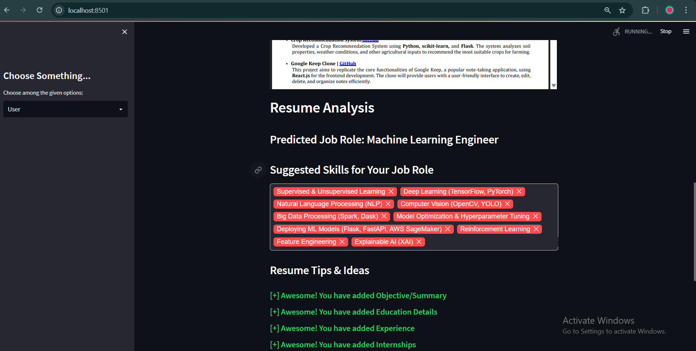
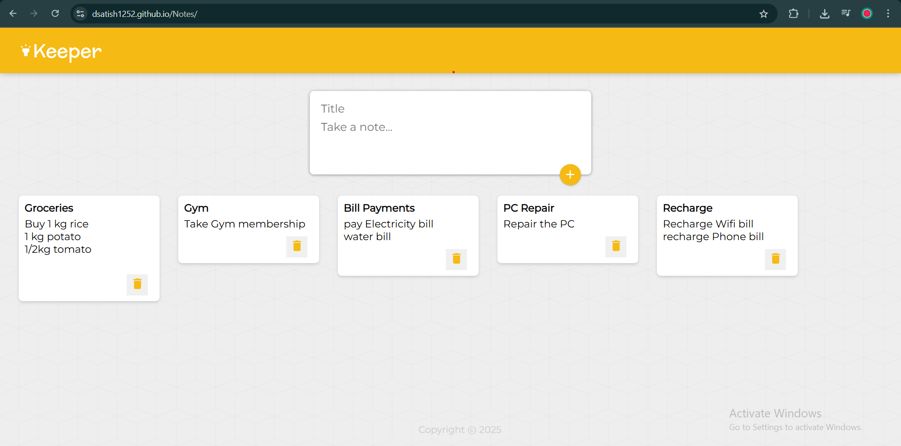
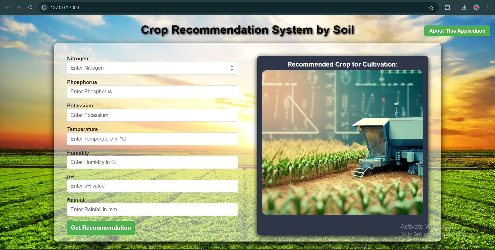
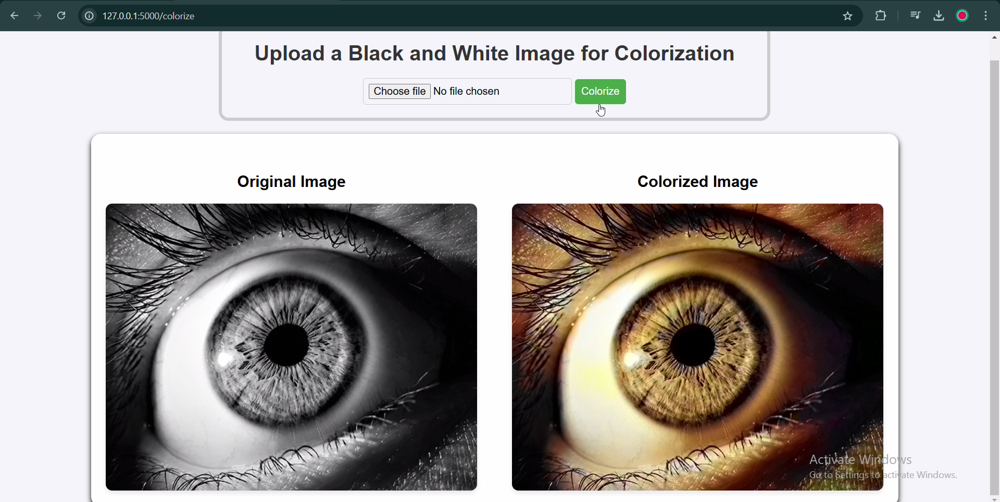
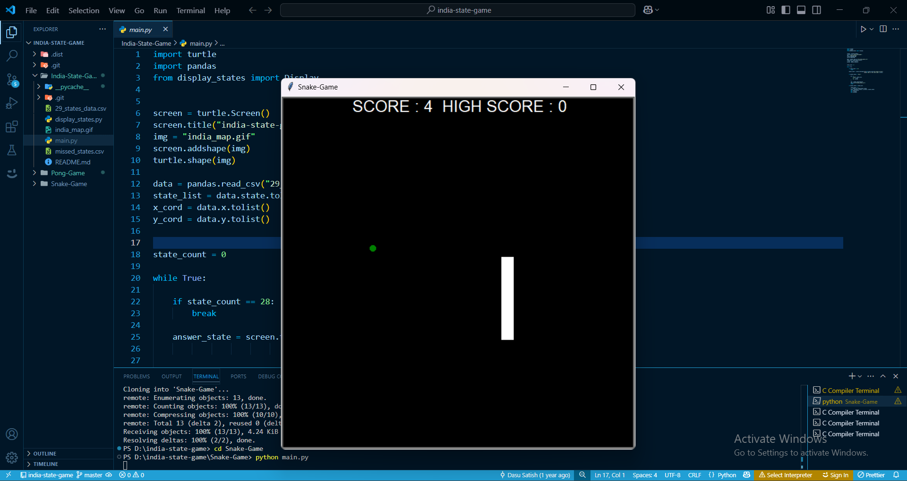
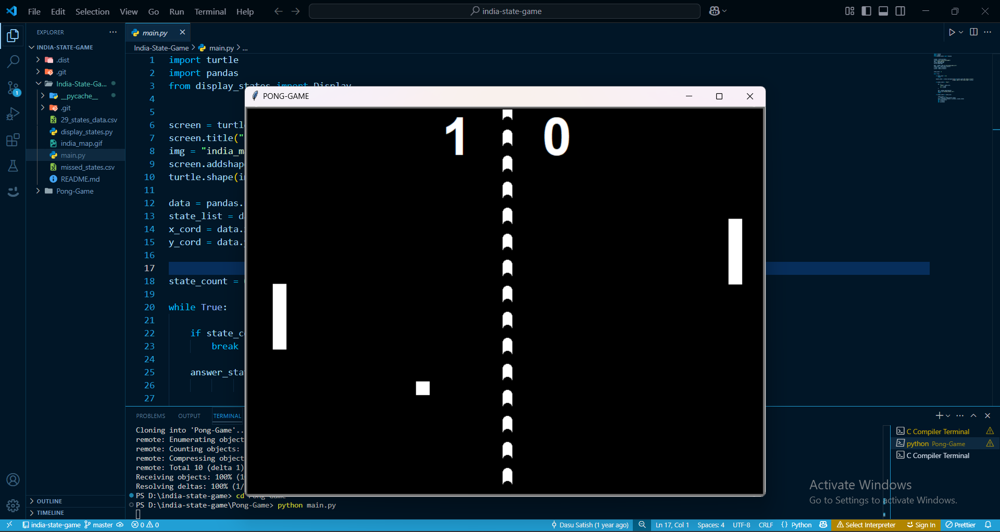
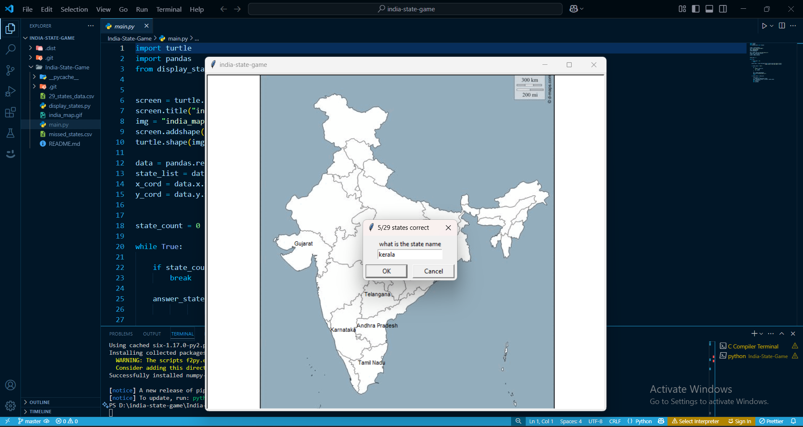

I’ve developed a resume enhancer application that leverages AI to help job seekers improve their resumes and boost their chances of securing a job. The system analyzes the content of a resume, focusing on areas like skills, experience, and formatting, and provides personalized suggestions for improvement. It also generates a score to evaluate how well the resume aligns with industry standards and job requirements. Additionally, the application recommends relevant certifications and courses to help users enhance their qualifications. Built with Streamlit and machine learning models, the tool offers an easy-to-use interface where users can upload their resumes, receive instant feedback, and implement suggested changes. This project aims to assist job seekers in refining their resumes, making them more attractive to potential employers and increasing their chances of landing interviews.

I built a fully functional note-taking application using the MERN stack (MongoDB, Express.js, React, and Node.js). The application allows users to register, log in, and securely manage their personal notes with full CRUD (Create, Read, Update, Delete) operations. With a clean, responsive user interface built using React and Bootstrap, and robust backend APIs powered by Node.js and Express, the app ensures efficient data storage and retrieval through MongoDB. This project showcases my ability to integrate frontend and backend technologies while implementing authentication and data handling in a real-world web application.

I’ve been working on a crop recommendation system that uses machine learning to help farmers choose the best crops for their environment. The system takes into account factors like climate, soil conditions, and other variables that affect crop growth. By using scikit-learn and Flask, the application processes user input and applies machine learning models to suggest the most suitable crops for the given conditions. This project aims to optimize agricultural productivity by providing personalized recommendations that can help farmers maximize their yields while minimizing resource waste. It’s designed to be user-friendly, allowing farmers to easily input their data and receive tailored suggestions for crop selection. Ultimately, my goal with this project is to support sustainable farming practices and make informed decisions easier for farmers.

I’ve been working on an image colorization application that uses deep learning to automatically add color to black-and-white images. The system leverages a pre-trained model to predict and apply realistic colors based on the content of the image. I’ve built the application using Python and TensorFlow, with a user-friendly interface in Streamlit that allows users to easily upload grayscale images and receive colorized versions in real-time. The goal of this project is to showcase the potential of AI in creative fields, transforming monochrome images into vibrant, full-color representations. It can be particularly useful for historical image restoration, art projects, and any scenario where colorization is desired without manual effort. Through this project, I’m aiming to demonstrate the power of AI-driven image enhancement and provide a tool that can streamline the colorization process.

I’ve developed a classic Snake game using Python, showcasing fundamental concepts of game development such as collision detection, user input handling, and dynamic rendering. The game is built using the Pygame library, which provides the tools needed for creating smooth animations and responsive gameplay. Players control the snake using arrow keys, guiding it to eat food and grow in length while avoiding collisions with the walls or itself. With increasing difficulty as the snake grows, the game offers an engaging and nostalgic experience. This project helped me strengthen my understanding of Python, game loops, and event-driven programming, and it serves as a fun demonstration of how core programming logic can be used to recreate classic games.

I’ve developed a Pong game using Python’s built-in GUI library, tkinter, recreating one of the earliest and most iconic arcade games. In this two-player game, each player controls a paddle using keyboard inputs to bounce the ball back and forth. The objective is to prevent the ball from passing your paddle while trying to score points against your opponent. The game includes collision detection, score tracking, and smooth paddle movement for a seamless gameplay experience. Building this project helped me deepen my understanding of GUI programming, event handling, and real-time updates in Python. It was a great way to apply logic and creativity while building a fun and interactive desktop application.

I’ve developed an India State guessing game using Python, where players are challenged to name all the Indian states. The game features a blank map of India, and as the player correctly types in state names, the corresponding state is displayed on the map at its respective location. This interactive game was built using the turtle module for graphical display and pandas to handle state name data and coordinates. It continues until the player has guessed all the states or chooses to exit. The project not only helps in learning Python libraries like turtle and pandas but also serves as an educational tool to improve geographical knowledge in a fun and engaging way.